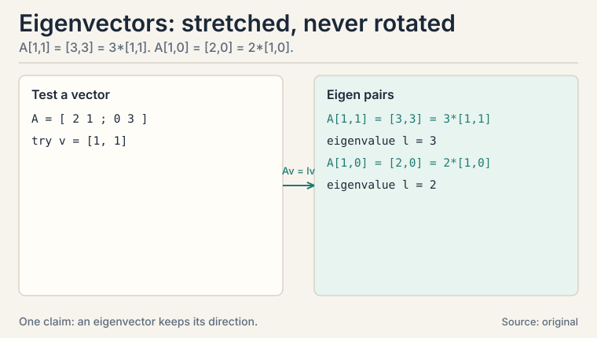
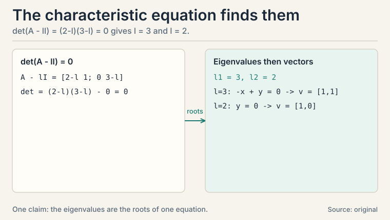
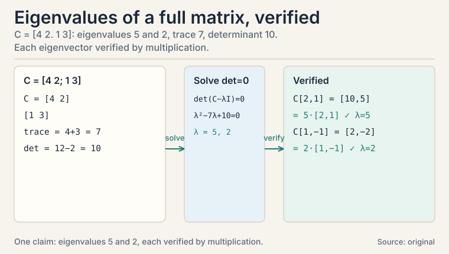
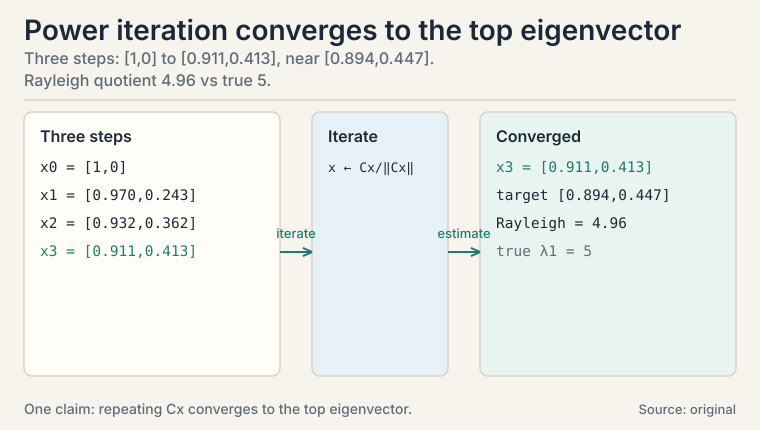
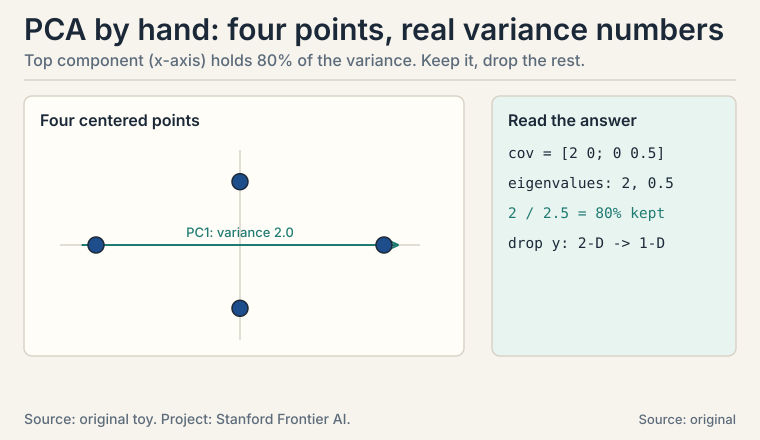
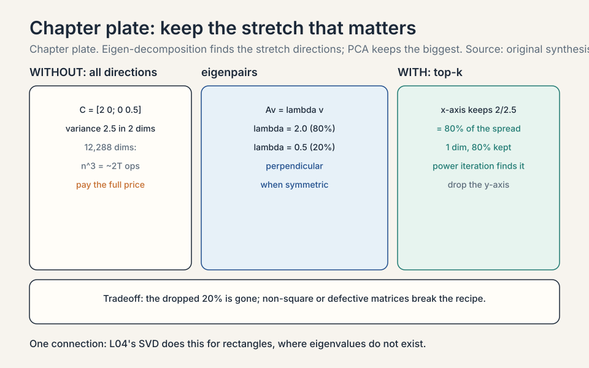

Lecture 3: Eigen-decomposition and PCA
Video blocked (ad-blocker or local file mode).
Watch on YouTubeVideo not loading? Watch on YouTube
The NPTEL lecture this chapter follows: eigenvalues, eigenvectors, and the characteristic equation.
The task: find the directions a matrix leaves alone
Apply a matrix to a vector and the vector usually rotates to a new direction. But some matrices have special vectors that refuse to rotate: the matrix only stretches or shrinks them. Those vectors are eigenvectors, and the stretch factors are eigenvalues.
Why hunt for them? Because a matrix’s action on its eigenvectors reveals its whole character. In ML the starring example is the covariance matrix of a dataset. Its eigenvectors are the directions of greatest spread in the data, and its eigenvalues say how much spread each direction holds. That is PCA, principal component analysis: the most used dimensionality reduction in ML (CS229 L10).
Subchapter: the diagonal case, where it is trivial
Take the simplest matrix, a diagonal one:
A = [ 2 0 ] v = [ 1 ] A v = [ 2*1 + 0*0 ] = [ 2 ] = 2 * [ 1 ]
[ 0 3 ] [ 0 ] [ 0*1 + 3*0 ] [ 0 ] [ 0 ]
The x-axis vector [1, 0] stays on the x-axis, stretched by 2. The y-axis vector [0, 1] stays on the y-axis, stretched by 3. Both are eigenvectors. The eigenvalues are 2 and 3. For a diagonal matrix, life is easy: the axes are the eigenvectors and the diagonal holds the eigenvalues.
But real covariance matrices are not diagonal. The data’s spread runs at an angle. So we need the general method.
The key question
Given any square matrix, how do you find the vectors it only stretches, and by how much?
Subchapter: the defining equation
An eigenvector v and eigenvalue lambda (the Greek letter lambda) satisfy one equation:
A v = lambda * v
The matrix acts, and the vector comes back pointing the same way, scaled by lambda. Rearranged: (A - lambdaI) v = 0, where I is the identity. A nonzero v solves this only when (A - lambdaI) squashes some direction flat, which happens exactly when its determinant is zero. That condition, det(A - lambdaI) = 0, is the characteristic equation*. Its roots are the eigenvalues.

Subchapter: the characteristic equation, step by step
Watch it on a real 2x2, by hand. The matrix stretches x by 2 and shears upward:
A = [ 2 1 ]
[ 0 3 ]
step 1, characteristic equation:
det([ 2-lambda, 1 ]) = (2-lambda)(3-lambda) - 0 = 0
([ 0, 3-lambda ])
eigenvalues: lambda1 = 3, lambda2 = 2
The determinant of a 2x2 is ad - bc: (2-lambda)(3-lambda) - 1*0. Set it to zero, solve: lambda = 2 or 3. For larger matrices the characteristic equation is a higher-degree polynomial, and you solve it numerically: nobody hand-solves a 100x100 characteristic polynomial.

Subchapter: eigenvectors by hand, verified
step 2, eigenvector for lambda1 = 3: [ 2-3 1 ] [ x ] = [ -x + y ] = [ 0 ] --> y = x [ 0 0 ] [ y ] [ 0 ] [ 0 ] eigenvector: v1 = [ 1, 1 ] check: A v1 = [ 3, 3 ] = 3 * v1 step 3, eigenvector for lambda2 = 2: [ 0 1 ] [ x ] = [ y ] = [ 0 ] --> y = 0 [ 0 1 ] [ y ] [ y ] [ 0 ] eigenvector: v2 = [ 1, 0 ] check: A v2 = [ 2, 0 ] = 2 * v2
Read the result. Along [1, 1] the matrix triples everything. Along [1, 0] it doubles everything. Every other vector is a mix of these two, so the matrix’s whole behavior is captured by two directions and two numbers. Note the scale freedom: [2, 2] is the same eigenvector as [1, 1]. Eigenvectors have a direction, not a length.
That capture has a name: the eigen-decomposition (or spectral decomposition for symmetric matrices),
A = V Lambda V^-1
V holds the eigenvectors as columns, Lambda is diagonal with the eigenvalues. The matrix equals: change into the eigenvector basis, stretch each axis by its eigenvalue, change back.
Subchapter: a non-triangular matrix, start to finish
The toy above was triangular, which made the eigenvalues easy. Real covariance matrices are full. Work one that is not triangular:
C = [ 4 2 ]
[ 1 3 ]
step 1, characteristic equation:
det([ 4-lambda, 2 ]) = (4-lambda)(3-lambda) - 2 = 0
([ 1, 3-lambda ])
lambda^2 - 7 lambda + 10 = 0
eigenvalues: lambda1 = 5, lambda2 = 2
step 2, eigenvector for lambda1 = 5:
[ -1 2 ] [ x ] = [ 0 ] --> -x + 2y = 0, so v1 = [ 2, 1 ]
[ 1 -2 ] [ y ] [ 0 ]
check: C v1 = [ 8+2, 2+3 ] = [ 10, 5 ] = 5 * v1
step 3, eigenvector for lambda2 = 2:
[ 2 2 ] [ x ] = [ 0 ] --> x + y = 0, so v2 = [ 1, -1 ]
[ 1 1 ] [ y ] [ 0 ]
check: C v2 = [ 4-2, 1-3 ] = [ 2, -2 ] = 2 * v2
Two free facts fall out of the arithmetic. The trace of a matrix, the sum of its diagonal entries, equals the sum of its eigenvalues: 4 + 3 = 7 = 5 + 2. The determinant equals their product: 43 - 21 = 10 = 5 * 2. These are the two invariants that survive any change of basis: rotate the matrix however you like, these two numbers never move. Interviewers ask for the trace and determinant from eigenvalues because of this.
Note this matrix is not symmetric (2 vs 1 off the diagonal), so its eigenvectors [2, 1] and [1, -1] are not perpendicular. The spectral theorem’s guarantee needs symmetry. Without it, life is harder. One more reason covariance matrices, which are always symmetric, are the friendly case.

Subchapter: why symmetric matrices are safe
Two honest limits. First, only square matrices have eigenvalues in this sense. A 3x2 data matrix has no eigenvectors. That is why L04 builds the SVD instead. Second, some square matrices are defective: they do not have enough independent eigenvectors to fill V.
For symmetric matrices, which include every covariance matrix, neither problem occurs: the eigenvectors are perpendicular and complete. That is the spectral theorem, and it is why PCA always works. When you see a symmetric matrix in ML, read it as “safe to decompose.”
| Property | General square matrix | Symmetric matrix |
|---|---|---|
| Eigenvectors | may not fill the basis (defective); not perpendicular | perpendicular and complete (spectral theorem) |
| Diagonalization | not guaranteed | always: A = V Λ Vᵀ |
| ML reading | harder; non-square needs L04’s SVD | “safe to decompose”; covariance is the friendly case |
Subchapter: power iteration, how giant matrices vote for their top direction
Eigen-decomposing a 12,288 x 12,288 covariance matrix costs on the order of n^3: about two trillion operations. Nobody pays that when only the top few directions are needed. The cheap answer is power iteration: multiply a vector by the matrix repeatedly, renormalizing each time. The top eigenvector wins because its eigenvalue is the largest: every multiplication stretches it more than the rest.
Watch it on C = [4 2. 1 3] from the previous subchapter. Its top eigenvector is [2, 1], eigenvalue 5. Start from x0 = [1, 0]:
x1 = C x0 = [4, 1]
normalize: ||[4,1]|| = sqrt(17) = 4.12 --> [0.970, 0.243]
x2 = C x1 = [4.37, 1.70]
normalize: ||[4.37,1.70]|| = 4.68 --> [0.932, 0.362]
x3 = C x2 = [4.45, 2.02]
normalize: ||[4.45,2.02]|| = 4.89 --> [0.911, 0.413]
Three steps moved [1, 0] to [0.911, 0.413]. The target is [2, 1] / sqrt(5) = [0.894, 0.447]. It is visibly converging. The eigenvalue estimate comes free: the Rayleigh quotient x^T C x at x3 is 4.96, already near the true 5.
The ratio of the top two eigenvalues sets the speed: 5/2 = 2.5 here, so each step shrinks the error by roughly that factor. When the top two eigenvalues are close, convergence crawls. This algorithm is the engine inside PageRank (the web’s top eigenvector) and inside randomized PCA for matrices too big to decompose exactly.

PCA by hand: four points, real variance numbers
Now the payoff. Four 2-D data points, already centered (mean subtracted):
points: p1 = [ 2, 0 ], p2 = [ -2, 0 ], p3 = [ 0, 1 ], p4 = [ 0, -1 ]
Subchapter: the covariance matrix
Covariance measures how two coordinates vary together: the average of (x_i * y_i) over the points. The covariance matrix stores every pair:
var(x) = (4 + 4 + 0 + 0) / 4 = 2
var(y) = (0 + 0 + 1 + 1) / 4 = 0.5
cov(x,y) = (0 + 0 + 0 + 0) / 4 = 0
C = [ 2 0 ]
[ 0 0.5 ]
The diagonal holds each coordinate’s variance. The off-diagonal holds the co-movement. Here it is zero: x and y vary independently. Center first, always: without centering, the first component chases the mean instead of the spread.
Subchapter: read the eigen-decomposition as the answer
Eigen-decompose C. It is diagonal: eigenvalues 2 and 0.5, eigenvectors [1, 0] and [0, 1]. The first principal component is the x-axis: it carries variance 2 out of 2.5 total, i.e. 80% of the data’s spread. Drop the y-axis and each point keeps 80% of the information while the data shrinks from 2-D to 1-D. That is PCA: keep the top eigenvectors of the covariance matrix, project the data onto them, discard the rest.
In real PCA the covariance is not diagonal, so the components run at angles, but the recipe is identical: eigen-decompose the covariance, sort by eigenvalue, keep the top k. The eigenvalues tell you exactly how much variance each kept direction preserves: no guessing, a number per direction.

Subchapter: choosing k, the variance curve
The eigenvalues double as a decision tool. List them as fractions of the total and accumulate:
eigenvalues: 2.0 (80%), 0.5 (20%) keep 1: 80% of variance preserved, data halves in size keep 2: 100% preserved, no compression
The decision rule: keep adding components until the cumulative fraction crosses your budget, typically 90 to 95%. The eigenvalues hand you this number before you compress anything. If reaching 90% needs most of the components, the data has no low-dimensional linear structure and PCA is the wrong tool: admit it and reach for a nonlinear method instead.
Subchapter: the honest price of eigen-decomposition
Three limits, stated plainly. First, cost: a full eigen-decomposition runs in about n^3 operations. A 12,288 x 12,288 matrix costs roughly two trillion multiply-adds. That is why PCA at scale uses the SVD plus randomized methods, never the covariance eigen-decomposition directly.
Second, defective matrices: some square matrices lack a full set of eigenvectors, so V has no inverse and A = V Lambda V^-1 does not exist. Symmetry protects you. Without it, check before you decompose.
Third, sensitivity: eigenvalues of non-symmetric matrices can swing wildly under tiny perturbations of the entries. Symmetric matrices are stable: a small change in the covariance moves the components by a small amount. One more reason the symmetric case is the friendly one.
| Concept | Definition | In the toy |
|---|---|---|
| Eigenvector | v with Av = lambda v, direction unchanged | [1, 1] and [1, 0] |
| Eigenvalue | the stretch factor lambda | 3 and 2 |
| Eigen-decomposition | A = V Lambda V^-1 | change basis, stretch, change back |
| Covariance matrix | C_ij = average of (coord_i * coord_j) | [2 0; 0 0.5] |
| PCA | keep top eigenvectors of C | x-axis keeps 80% of variance |
What is used where: the real systems
| Math idea | Where it appears | Why there |
|---|---|---|
| PCA | sklearn.decomposition.PCA | top covariance eigenvectors; the standard compressor |
| Top eigenvector | PageRank | the web’s link matrix ranks by its top eigenvector |
| Eigenvectors | Spectral clustering | Laplacian eigenvectors reveal graph communities |
| Hessian eigenvalues | Optimization (L08) | eigenvalues of second derivatives = curvature |
| Power iteration | Large-scale eigen solvers | multiply repeatedly; the top direction emerges |

A vector a matrix only stretches, never rotates. In the toy, A = [2 1. 0 3] sends [1, 1] to [3, 3]: same direction, triple the length. So [1, 1] is an eigenvector with eigenvalue 3. Every matrix action decomposes into stretches along its eigenvectors, which is why A = V Lambda V^-1 tells you everything about A. Yes. Negative means the matrix flips the direction (a 180-degree turn plus stretch). Zero means the matrix crushes that direction flat: the eigenvector lands on the zero vector. A zero eigenvalue of a covariance matrix means the data has no spread at all in that direction, so PCA drops it for free.
Step 1: form A - lambda I = [2-lambda, 1, 0, 3-lambda]. Step 2: determinant = (2-lambda)(3-lambda) - 0 = 0, so lambda = 3 or 2. Step 3: for lambda = 3, solve [-1 1. 0 0][x;y] = 0. Then -x + y = 0, so v = [1,1]. Verify: A[1,1] = [3,3] = 3[1,1]. Step 4: for lambda = 2, [0 1. 0 1][x;y] = 0 gives y = 0. Then v = [1,0]. Verify: A[1,0] = [2,0] = 2[1,0]. Because the algebra has many sign-error traps, and Av = lambda v is the definition: the check is one multiplication against the thing you claim. In interviews, the verification step is what separates a memorized procedure from understanding.
It finds the directions of greatest variance and keeps only those. In the four-point toy, the covariance matrix [2 0. 0 0.5] has eigenvalues 2 and 0.5: the x-axis holds 80% of the variance, the y-axis 20%. Keeping only the x-component shrinks each point from 2 numbers to 1 while preserving 80% of the spread. Real PCA does the same with a non-diagonal covariance. Because variance is the question. PCA asks “along which directions does the data spread most?” and the covariance matrix stores exactly the spread in every direction pair. Its eigenvectors are the spread directions, its eigenvalues the spread amounts. The data matrix is not square, so it has no eigenvectors at all: that gap is what the SVD in L04 fills.
Because their eigenvectors are perpendicular and complete: every symmetric matrix decomposes cleanly with no defective cases. Covariance matrices are symmetric by construction (C = X^T X up to scaling), so PCA’s eigen-decomposition always exists and the components come out orthogonal. That orthogonality is why PCA features are uncorrelated, which later models appreciate. The first component chases the mean instead of the spread. Without centering, the direction from the origin to the data cloud dominates the variance, and PCA reports “the data sits over there” rather than “the data spreads along this axis”. Always subtract the mean first.
Three steps in one formula. V^-1 changes into the eigenvector basis: it rewrites the input in the matrix’s favorite coordinates. Lambda stretches each coordinate by its eigenvalue: the only real work. V changes back to the original coordinates. The matrix is just “stretch along special axes,” with bookkeeping on both sides. When the eigenvectors are orthonormal: perpendicular and unit length. That is exactly the symmetric case. Then inversion is free (a transpose), which is one more reason symmetric matrices are the well-behaved citizens of ML.
Step 1: center the data (subtract the mean per feature). Step 2: form the covariance (or better, SVD the centered data directly: same components, more stable). Step 3: eigen-decompose, sort eigenvalues descending. Step 4: check the cumulative variance: if the top 50 eigenvalues hold 95% of the total, keep 50. The eigenvalues give you the exact kept-variance number: no guessing. Then the data has no low-dimensional linear structure, and PCA is the wrong tool: keeping 50 throws away 40% of the spread. Either keep more components, or admit the structure is nonlinear and reach for a nonlinear method. The eigenvalues told you this before you wasted a week.
For centered data, the SVD of the data matrix gives the PCA directly: the right singular vectors are the principal components, and the squared singular values (divided by n) are the eigenvalues of the covariance. PCA is the SVD wearing a statistician’s hat. In practice, compute PCA via SVD: forming X^T X squares the condition number and loses precision. Small singular values get squared into oblivion: 1e-8 becomes 1e-16, below float precision. The SVD works on X directly and never squares anything, so it resolves small directions accurately. Same answer, better arithmetic.
Power iteration: start from any vector, multiply by the matrix, renormalize, repeat. On the toy C = [4 2. 1 3], three steps took [1, 0] to [0.911, 0.413], already near the true top eigenvector [0.894, 0.447]. Each multiplication stretches the top direction by the largest eigenvalue, so it outgrows the rest. The Rayleigh quotient x^T C x gives the eigenvalue estimate: 4.96 against the true 5. When the top two eigenvalues are close. The error shrinks by roughly the ratio lambda1/lambda2 per step: 5/2 = 2.5 here, so convergence is fast. If the ratio is 1.01, expect hundreds of steps. That is the same reason flat spectra resist low-rank compression in L04.
Recap: the whole lesson on one screen
- The task. Find the directions a matrix only stretches: they reveal its character.
- First attempt. Diagonal matrices make it trivial: axes are eigenvectors, diagonal holds eigenvalues.
- The key question. How to find them for any square matrix?
- The new idea. Solve Av = lambda v via det(A - lambda I) = 0. Toy: eigenvalues 3 and 2, eigenvectors [1, 1] and [1, 0], each verified by multiplication.
- The capture. A = V Lambda V^-1: change basis, stretch, change back.
- Symmetric safety. Perpendicular, complete eigenvectors. Covariance matrices always cooperate: PCA is safe. A full (non-triangular) 2x2 worked: eigenvalues 5 and 2, trace 7, determinant 10, each eigenvector verified.
- Power iteration. Multiply and renormalize: the top direction wins. Three steps on the toy converged to [0.911, 0.413] with eigenvalue estimate 4.96. The workhorse behind PageRank and large-scale PCA.
- PCA by hand. Four points, covariance [2 0. 0 0.5], top component holds 80% of variance. Drop the rest. Choose k from the cumulative variance curve. Full eigen-decomposition costs n^3 and can fail on defective matrices: know the price.
- The price and the bridge. Eigen-decomposition needs square matrices. Real data matrices are rectangular. L04 generalizes the idea to every matrix: the SVD.
Go deeper
- 3Blue1Brown, “Eigenvectors and eigenvalues” (Essence of linear algebra, ch. 14, the embed above): https://www.youtube.com/watch?v=PFDu9oVAE-g
- The NPTEL lecture for this lesson (frontmatter video): https://www.youtube.com/watch?v=vsb_Y4rNBCc
- Deisenroth, Faisal, Ong, “Mathematics for Machine Learning”, ch. 4 (free): https://mml-book.github.io: eigendecomposition, PCA derivation.
- Strang, “Introduction to Linear Algebra”, ch. 6: eigenvalues, symmetric matrices, PCA.
Official sources and further reading
Official: - “Essential Mathematics for Machine Learning” playlist, Lecture 09 (this lesson’s video): paper - NPTEL course page (111107137): https://nptel.ac.in/courses/111107137
Further reading: - Deisenroth, Faisal, Ong, “Mathematics for Machine Learning”, ch. 4 (free): - eigendecomposition, PCA derivation. - Strang, “Introduction to Linear Algebra”, ch. 6: eigenvalues, symmetric matrices, PCA.
Caveats. The toy matrices and the four-point PCA are the lesson’s own worked examples. The lecture’s exact examples are [uncertain] (transcripts for L09-L11, L16-L17 were not recovered). The PCA recipe (eigen-decompose covariance, keep top components) matches the playlist’s lecture titles and standard treatment.
Connections to the other courses
- CS229 L10: PCA and factor analysis, the full ML treatment. This lesson is its math prerequisite.
- CS229S L06: low-rank approximation via SVD generalizes this lesson’s truncation idea to non-square matrices.
- CS336: embedding matrices are often compressed with the same eigen/SVD tools.
Coverage map
Every lecture concept, and where this lesson covers it:
| Lecture concept | Covered in | Lines |
|---|---|---|
| eigenvectors as directions a matrix only stretches | The task: find the directions a matrix leaves alone | l03:28-42 |
| diagonal case: axes are eigenvectors | Subchapter: the diagonal case | l03:43-60 |
| Av = lambda v, the defining equation | Subchapter: the defining equation | l03:66-83 |
| characteristic equation, determinant zero | Subchapter: the characteristic equation, step by step | l03:84-106 |
| eigenvectors by hand, verified by multiplication | Subchapter: eigenvectors by hand, verified | l03:107-137 |
| non-triangular 2x2, trace = sum, determinant = product | Subchapter: a non-triangular matrix, start to finish | l03:138-180 |
| symmetric matrices: spectral theorem, PCA is safe | Subchapter: why symmetric matrices are safe | l03:181-196 |
| power iteration, Rayleigh quotient, convergence rate | Subchapter: power iteration | l03:197-234 |
| covariance matrix from four points | Subchapter: the covariance matrix | l03:244-263 |
| eigen-decomposition read as the PCA answer | Subchapter: read the eigen-decomposition as the answer | l03:264-281 |
| choosing k from the cumulative variance curve | Subchapter: choosing k, the variance curve | l03:282-299 |
| honest price: n^3 cost, defective matrices, sensitivity | Subchapter: the honest price of eigen-decomposition | l03:300-326 |
| what is used where: PCA, PageRank, Hessians, power iteration | What is used where | l03:327-338 |
| 8 interview Q&As with follow-ups | QA blocks | l03:339-386 |
| full-lesson recap | Recap | l03:387-397 |
Sources
- VIDEOEssential Mathematics for Machine Learning: Lecture 09 (Eigenvalues and Eigenvectors)
- SUPPLEMENTDeisenroth, Faisal, Ong, Mathematics for Machine Learning, ch. 4
- SUPPLEMENTStrang, Introduction to Linear Algebra, ch. 6